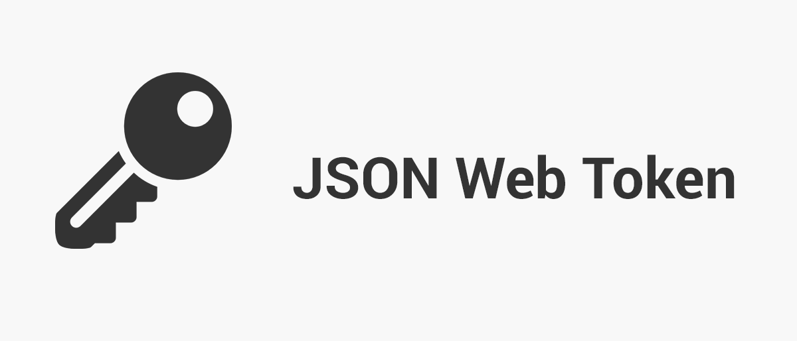

JSON Web Tokens (JWT)

JWT — это открытый стандарт (RFC 7519) для создания токенов доступа,
основанный на формате JSON. Эти токены содержат закодированные данные о пользователе
и используются для безопасной передачи информации между сторонами.
Видеообзор JWT Посмотрите это видео, чтобы лучше понять принципы работы JWT:
VIDEO
Структура JWT токена JWT состоит из трех частей, разделенных точками:
Header (Заголовок)
Содержит метаданные о токене — тип токена и алгоритм подписи.
{
"alg": "HS256",
"typ": "JWT"
}
Payload (Полезная нагрузка)
Содержит утверждения (claims) — данные о пользователе и дополнительную информацию.
{
"sub": "1234567890",
"name": "John Doe",
"iat": 1516239022
}
Signature (Подпись)
Проверяет целостность токена. Создается путем кодирования header и payload с использованием секретного ключа.
HMACSHA256(
base64UrlEncode(header) + "." +
base64UrlEncode(payload),
secret
)
Пример полного JWT токена
eyJhbGciOiJIUzI1NiIsInR5cCI6IkpXVCJ9.
Типы утверждений (Claims) в JWT
Зарегистрированные утверждения
iss — эмитент токенаsub — субъект токенаaud — получатель токенаexp — время истеченияnbf — начало действияiat — время созданияjti — уникальный ID
Публичные утверждения
Определяются по соглашению сторон или регистрируются в IANA.
Приватные утверждения
Пользовательские поля для конкретного приложения.
Алгоритмы подписи
HS256
Тип: Симметричный
Один секретный ключ для подписи и проверки.
RS256
Тип: Асимметричный
Приватный ключ для подписи, публичный для проверки.
ES256
Тип: Асимметричный
Использует эллиптические кривые.
Реализация JWT в приложениях
1. Создание токена
После успешной аутентификации сервер генерирует JWT:
// Node.js + jsonwebtoken
const jwt = require('jsonwebtoken');
const token = jwt.sign(
{ userId: user.id, role: user.role },
process.env.JWT_SECRET,
{ expiresIn: '1h' }
);
2. Передача токена клиенту
// В заголовке
res.setHeader('Authorization', `Bearer ${token}`);
// Или в теле
res.json({
success: true,
token,
user: { id: user.id, name: user.name }
});
3. Хранение токена
HTTP-only Cookies
Защита от XSS, но возможен CSRF.
LocalStorage
Удобно для SPA, но уязвимо к XSS.
Memory
Самый безопасный, но токен теряется при перезагрузке.
4. Проверка токена
const authMiddleware = (req, res, next) => {
const token = req.headers.authorization?.split(' ')[1];
if (!token) {
return res.status(401).json({ message: 'Токен отсутствует' });
}
try {
const decoded = jwt.verify(token, process.env.JWT_SECRET);
req.user = decoded;
next();
} catch {
return res.status(401).json({ message: 'Неверный токен' });
}
};
Преимущества и недостатки JWT
Преимущества
Не требует хранения состояния
Легко масштабируется
Кроссплатформенность
Гибкость
Высокая производительность
Недостатки
Больший размер токена
Нельзя отозвать до истечения срока
Payload не зашифрован
Нужна стратегия refresh-токенов
Refresh Tokens
Access Token
15–60 минут
Передается с каждым запросом
Refresh Token
Долгоживущий
Используется для обновления access token
Может быть отозван
Поток обновления
Получение access + refresh
Access истекает
Отправка refresh
Выдача нового access
Библиотеки для работы с JWT
.NET
System.IdentityModel.Tokens.Jwt